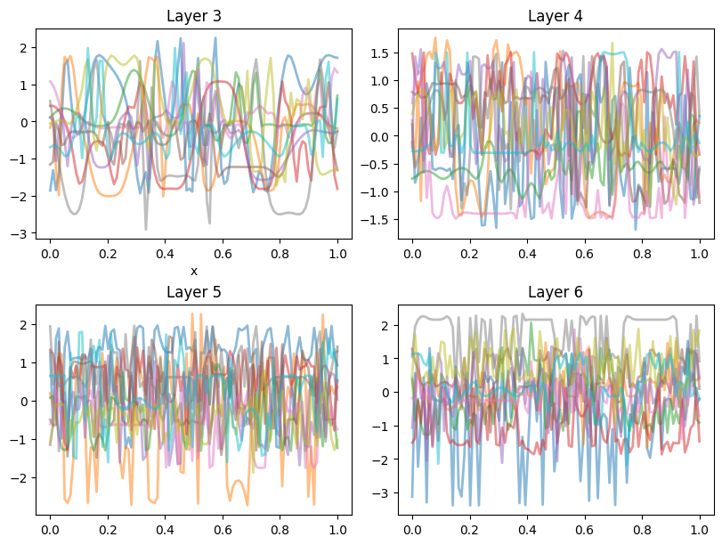

Code
import pandas as pd
import numpy as np
import matplotlib
import matplotlib.pyplot as plt
from scipy.stats import multivariate_normal
from scipy.linalg import cholesky, solve_triangular
import seaborn as snsdef kernel(xa, xb, amp, ll):
Xa, Xb = get_tiled(xa, xb)
return amp**2 * np.exp(-0.5 * 1./ll**2 * (Xa - Xb)**2 )
def get_tiled(xa, xb):
m, n = len(xa), len(xb)
xa, xb = xa.reshape(m,1) , xb.reshape(n,1)
Xa = np.tile(xa, (1, n))
Xb = np.tile(xb.T, (m, 1))
return Xa, Xb
def get_posterior(amp, ll, x, x_data, y_data, noise):
u = y_data.shape[0]
mu_y = np.mean(y_data)
y = (y_data - mu_y).reshape(u,1)
Sigma = noise * np.eye(u)
Kxx = kernel(x_data, x_data, amp, ll)
Kxpx = kernel(x, x_data, amp, ll)
Kxpxp = kernel(x, x, amp, ll)
# Inverse
jitter = np.eye(u) * 1e-12
L = cholesky(Kxx + Sigma + jitter)
S1 = solve_triangular(L.T, y, lower=True)
S2 = solve_triangular(L.T, Kxpx.T, lower=True).T
mu = S2 @ S1 + mu_y
cov = Kxpxp - S2 @ S2.T
return mu, covdef random_sample3():
zj_1 = get_prior(X)
us = []
for j in range(0, 6):
uj = zj_1.rvs(1)
zj = get_prior(zj_1.rvs(1))
zj_1 = zj
us.append(uj)
return us
G = 10
U1c = np.zeros((G, 100))
U2c = np.zeros((G, 100))
U3c = np.zeros((G, 100))
U4c = np.zeros((G, 100))
for j in range(0, G):
us = random_sample3()
U1c[j,:] = us[-4]
U2c[j,:] = us[-3]
U3c[j,:] = us[-2]
U4c[j,:] = us[-1]fig = plt.figure(layout='constrained', figsize=(8, 6))
plt.subplot(221)
plt.title('Layer 3')
plt.plot(X, U1c.T, alpha=0.5, lw=2)
plt.xlabel('x')
plt.subplot(222)
plt.title('Layer 4')
plt.plot(X, U2c.T, alpha=0.5, lw=2)
plt.subplot(223)
plt.title('Layer 5')
plt.plot(X, U3c.T, alpha=0.5, lw=2)
plt.subplot(224)
plt.title('Layer 6')
plt.plot(X, U4c.T, alpha=0.5, lw=2)
plt.savefig('layers1.png', dpi=170, bbox_inches='tight', transparent=True)
plt.show()
array([[ 0.79651676, 0.79651671, 0.79651677, 0.79651642, 0.79651664,
0.79651673, 0.79651678, 0.79651627, 0.79651637, 0.79651643,
0.79651614, 0.79651623, 0.79651647, 0.79651617, 0.79651595,
0.79651611, 0.79651594, 0.7965161 , 0.79651559, 0.79651593,
0.79651575, 0.79651581, 0.79651579, 0.79651574, 0.79651571,
0.79651558, 0.79651548, 0.79651542, 0.79651528, 0.79651551,
0.7965153 , 0.79651531, 0.79651533, 0.79651549, 0.79651516,
0.79651539, 0.79651516, 0.79651488, 0.79651496, 0.79651509,
0.79651528, 0.79651518, 0.79651531, 0.79651532, 0.79651542,
0.79651544, 0.79651547, 0.79651541, 0.79651555, 0.79651548,
0.79651558, 0.79651576, 0.79651582, 0.7965159 , 0.79651596,
0.79651591, 0.79651609, 0.79651614, 0.79651629, 0.796516 ,
0.79651583, 0.79651651, 0.79651644, 0.79651667, 0.79651618,
0.79651665, 0.7965166 , 0.79651671, 0.79651646, 0.79651632,
0.79651667, 0.7965167 , 0.79651692, 0.79651685, 0.7965168 ,
0.79651671, 0.79651653, 0.79651688, 0.79651639, 0.79651666,
0.79651626, 0.79651671, 0.79651651, 0.79651595, 0.79651594,
0.79651604, 0.79651586, 0.79651538, 0.79651567, 0.79651508,
0.7965147 , 0.79651449, 0.79651427, 0.79651408, 0.79651381,
0.79651328, 0.79651328, 0.79651312, 0.7965129 , 0.79651259],
[-0.56515191, -0.56510762, -0.56508754, -0.56508794, -0.56510023,
-0.56511307, -0.56512101, -0.56512213, -0.56511788, -0.56511083,
-0.56510251, -0.56509574, -0.56509072, -0.56508746, -0.56508604,
-0.56508565, -0.56508624, -0.56508722, -0.56508865, -0.5650906 ,
-0.56509211, -0.56509418, -0.5650959 , -0.56509792, -0.56509949,
-0.56510133, -0.56510307, -0.56510443, -0.56510618, -0.56510757,
-0.56510881, -0.56511025, -0.56511169, -0.56511329, -0.56511433,
-0.56511554, -0.56511634, -0.56511764, -0.56511884, -0.56511953,
-0.56512059, -0.56512171, -0.56512255, -0.56512323, -0.56512394,
-0.56512471, -0.56512537, -0.56512584, -0.56512644, -0.56512701,
-0.56512745, -0.56512778, -0.56512835, -0.56512857, -0.56512898,
-0.56512945, -0.56512966, -0.56513004, -0.56512997, -0.56513053,
-0.5651305 , -0.56513057, -0.56513093, -0.56513069, -0.56513096,
-0.56513106, -0.56513125, -0.56513092, -0.56513121, -0.56513109,
-0.56513116, -0.56513117, -0.56513106, -0.56513134, -0.56513133,
-0.565131 , -0.56513105, -0.56513099, -0.56513096, -0.56513045,
-0.56513075, -0.56513053, -0.56513029, -0.56513012, -0.56513003,
-0.56512978, -0.56512954, -0.56512935, -0.56512943, -0.56512882,
-0.56512877, -0.56512831, -0.5651281 , -0.56512783, -0.56512774,
-0.56512746, -0.56512692, -0.56512664, -0.56512619, -0.56512605],
[-1.172252 , -1.17226223, -1.17227225, -1.17228285, -1.1722933 ,
-1.17230357, -1.17231459, -1.17232516, -1.17233591, -1.17234708,
-1.17235791, -1.17236934, -1.17238018, -1.17239125, -1.1724028 ,
-1.17241355, -1.1724241 , -1.17243513, -1.17244631, -1.17245681,
-1.17246761, -1.17247743, -1.17248793, -1.17249771, -1.17250697,
-1.17251686, -1.17252581, -1.1725348 , -1.17254322, -1.17255149,
-1.17255928, -1.17256666, -1.1725738 , -1.17258048, -1.17258665,
-1.17259302, -1.17259817, -1.17260368, -1.17260844, -1.17261299,
-1.17261684, -1.17262094, -1.17262436, -1.17262766, -1.17263022,
-1.17263319, -1.17263547, -1.17263743, -1.17263939, -1.17264119,
-1.17264249, -1.17264381, -1.17264536, -1.17264604, -1.17264698,
-1.17264803, -1.17264865, -1.17264952, -1.17264964, -1.17265018,
-1.17265056, -1.172651 , -1.17265124, -1.17265109, -1.17265139,
-1.17265166, -1.17265156, -1.17265205, -1.17265206, -1.17265172,
-1.17265191, -1.1726522 , -1.1726522 , -1.17265222, -1.17265246,
-1.17265244, -1.17265215, -1.17265191, -1.17265182, -1.17265212,
-1.17265204, -1.1726521 , -1.17265157, -1.17265224, -1.17265187,
-1.17265194, -1.17265147, -1.17265224, -1.17265189, -1.17265212,
-1.17265174, -1.17265212, -1.17265225, -1.17265206, -1.17265207,
-1.17265172, -1.17265206, -1.17265188, -1.17265222, -1.17265219],
[-0.47202208, -0.4720213 , -0.47202112, -0.47202099, -0.47202044,
-0.47202081, -0.47202002, -0.47202077, -0.47201982, -0.47201984,
-0.47201983, -0.47202022, -0.47202078, -0.47202037, -0.47202072,
-0.47202165, -0.47202189, -0.47202226, -0.47202351, -0.47202434,
-0.47202531, -0.47202653, -0.47202821, -0.47202946, -0.47203129,
-0.4720329 , -0.47203515, -0.47203716, -0.47204034, -0.47204328,
-0.47204636, -0.47204959, -0.47205301, -0.47205778, -0.47206253,
-0.47206635, -0.4720713 , -0.47207685, -0.47208236, -0.47208866,
-0.47209437, -0.47210105, -0.47210836, -0.47211541, -0.47212255,
-0.47213031, -0.47213743, -0.47214482, -0.47215232, -0.47215881,
-0.47216554, -0.47217225, -0.47217817, -0.47218228, -0.47218676,
-0.47218954, -0.4721932 , -0.47219506, -0.47219628, -0.47219667,
-0.47219689, -0.47219584, -0.47219537, -0.47219459, -0.47219274,
-0.47219184, -0.47219021, -0.4721902 , -0.47218959, -0.47218954,
-0.47218835, -0.47218878, -0.4721899 , -0.4721907 , -0.47219139,
-0.4721927 , -0.47219326, -0.47219467, -0.47219529, -0.47219629,
-0.47219686, -0.47219675, -0.47219718, -0.47219716, -0.47219617,
-0.47219605, -0.47219569, -0.47219481, -0.47219377, -0.47219448,
-0.47219314, -0.47219306, -0.47219284, -0.47219262, -0.47219311,
-0.47219257, -0.47219227, -0.47219289, -0.47219308, -0.47219427],
[-0.73116026, -0.73115144, -0.73114303, -0.73113512, -0.73112831,
-0.73112055, -0.73111454, -0.73110769, -0.73110234, -0.73109686,
-0.73109187, -0.73108698, -0.73108271, -0.73107844, -0.73107469,
-0.73107195, -0.73106863, -0.73106622, -0.73106387, -0.73106132,
-0.73105969, -0.73105862, -0.73105717, -0.73105638, -0.73105569,
-0.73105542, -0.73105563, -0.73105574, -0.73105601, -0.73105721,
-0.73105854, -0.7310599 , -0.73106176, -0.73106356, -0.73106643,
-0.73106962, -0.73107255, -0.73107598, -0.73108018, -0.73108414,
-0.73108878, -0.73109423, -0.73110005, -0.73110575, -0.73111311,
-0.73112005, -0.73112825, -0.73113613, -0.73114459, -0.73115451,
-0.73116496, -0.73117554, -0.73118751, -0.73119984, -0.73121335,
-0.73122717, -0.73124233, -0.73125753, -0.73127462, -0.73129228,
-0.73131113, -0.73133093, -0.73135208, -0.73137407, -0.73139721,
-0.73142213, -0.73144767, -0.73147449, -0.73150273, -0.73153231,
-0.73156344, -0.73159552, -0.73162904, -0.73166371, -0.73170006,
-0.73173731, -0.73177646, -0.73181601, -0.73185704, -0.73189938,
-0.73194206, -0.73198605, -0.7320312 , -0.73207618, -0.73212263,
-0.73216931, -0.732216 , -0.73226304, -0.73230998, -0.73235585,
-0.73240196, -0.73244724, -0.7324917 , -0.73253487, -0.7325769 ,
-0.7326172 , -0.73265559, -0.73269208, -0.73272677, -0.73275802],
[-1.02971147, -1.02965617, -1.02960148, -1.0295492 , -1.02949719,
-1.02944862, -1.02940034, -1.02935515, -1.02931233, -1.02927204,
-1.02923341, -1.02919889, -1.02916522, -1.02913558, -1.0291096 ,
-1.029086 , -1.0290659 , -1.02904763, -1.02903361, -1.0290237 ,
-1.02901644, -1.0290133 , -1.02901314, -1.02901655, -1.02902322,
-1.0290346 , -1.02904794, -1.02906566, -1.02908763, -1.0291119 ,
-1.02914044, -1.02917168, -1.02920639, -1.02924457, -1.02928637,
-1.02933087, -1.02937828, -1.02942799, -1.02948057, -1.02953566,
-1.02959357, -1.02965296, -1.02971415, -1.02977744, -1.02984259,
-1.0299085 , -1.02997569, -1.03004246, -1.03011102, -1.03017945,
-1.03024857, -1.03031536, -1.03038373, -1.03044949, -1.03051521,
-1.03057908, -1.0306421 , -1.03070306, -1.03076137, -1.0308175 ,
-1.03087171, -1.0309234 , -1.03097239, -1.03101862, -1.03106083,
-1.03110139, -1.03113865, -1.03117152, -1.03120319, -1.03122877,
-1.03125319, -1.03127353, -1.03129188, -1.0313048 , -1.03131594,
-1.03132303, -1.03132771, -1.03132771, -1.03132502, -1.03131982,
-1.03131082, -1.03129828, -1.03128331, -1.03126503, -1.03124416,
-1.03121919, -1.03119216, -1.03116273, -1.03112895, -1.0310941 ,
-1.03105579, -1.03101544, -1.03097207, -1.03092711, -1.03088068,
-1.03083039, -1.03077827, -1.03072656, -1.03067051, -1.03061446],
[ 0.71949186, 0.71949387, 0.71949622, 0.71949803, 0.71949945,
0.71950078, 0.71950173, 0.71950296, 0.71950425, 0.71950461,
0.71950487, 0.71950567, 0.71950627, 0.71950663, 0.71950663,
0.71950704, 0.71950686, 0.71950719, 0.71950722, 0.71950699,
0.71950674, 0.71950643, 0.71950627, 0.71950556, 0.7195049 ,
0.71950401, 0.71950298, 0.7195016 , 0.71950013, 0.71949818,
0.71949602, 0.71949277, 0.71948966, 0.71948568, 0.71948095,
0.71947571, 0.71946951, 0.7194623 , 0.71945443, 0.71944562,
0.71943542, 0.71942392, 0.71941166, 0.71939758, 0.71938234,
0.71936554, 0.71934769, 0.71932817, 0.71930751, 0.7192854 ,
0.71926245, 0.71923848, 0.71921351, 0.71918798, 0.71916179,
0.71913536, 0.71910847, 0.71908188, 0.71905612, 0.71903005,
0.71900502, 0.7189808 , 0.71895775, 0.71893574, 0.71891466,
0.71889548, 0.71887711, 0.7188602 , 0.71884418, 0.71883005,
0.7188166 , 0.71880443, 0.71879389, 0.718784 , 0.71877538,
0.71876768, 0.71876042, 0.71875447, 0.71874914, 0.71874457,
0.71874073, 0.71873725, 0.71873428, 0.71873194, 0.71873021,
0.7187288 , 0.71872785, 0.71872694, 0.71872701, 0.71872712,
0.71872757, 0.71872881, 0.71873005, 0.71873196, 0.71873391,
0.71873676, 0.71873963, 0.71874291, 0.71874737, 0.71875156],
[-0.73876683, -0.73876696, -0.73876677, -0.73876686, -0.73876719,
-0.73876711, -0.73876664, -0.73876708, -0.73876703, -0.73876695,
-0.73876688, -0.73876719, -0.73876666, -0.7387672 , -0.73876675,
-0.73876679, -0.73876701, -0.73876699, -0.73876727, -0.73876676,
-0.738767 , -0.7387671 , -0.73876701, -0.73876677, -0.7387672 ,
-0.73876748, -0.73876666, -0.7387668 , -0.73876665, -0.73876689,
-0.73876751, -0.73876696, -0.73876728, -0.73876709, -0.73876683,
-0.73876701, -0.73876702, -0.73876679, -0.738767 , -0.73876718,
-0.73876694, -0.73876737, -0.73876667, -0.73876709, -0.73876716,
-0.73876716, -0.7387666 , -0.73876709, -0.73876705, -0.73876695,
-0.73876723, -0.7387666 , -0.73876705, -0.7387667 , -0.73876693,
-0.73876707, -0.73876664, -0.73876671, -0.73876684, -0.73876672,
-0.73876696, -0.73876682, -0.7387671 , -0.73876677, -0.73876679,
-0.73876675, -0.73876689, -0.73876696, -0.73876694, -0.73876669,
-0.73876663, -0.73876709, -0.73876726, -0.73876723, -0.73876695,
-0.73876686, -0.73876698, -0.73876686, -0.73876693, -0.73876662,
-0.73876659, -0.73876633, -0.73876684, -0.73876697, -0.73876674,
-0.7387669 , -0.73876688, -0.73876697, -0.7387667 , -0.73876688,
-0.73876693, -0.73876703, -0.73876705, -0.73876717, -0.738767 ,
-0.73876692, -0.73876697, -0.73876668, -0.73876699, -0.73876727],
[ 0.16078905, 0.16078928, 0.16078995, 0.1607907 , 0.16079126,
0.16079208, 0.16079277, 0.16079367, 0.16079439, 0.16079551,
0.16079682, 0.16079759, 0.16079907, 0.1608001 , 0.16080152,
0.16080265, 0.16080431, 0.16080587, 0.16080754, 0.1608094 ,
0.16081124, 0.1608131 , 0.16081524, 0.16081737, 0.16081942,
0.16082145, 0.16082331, 0.16082597, 0.16082827, 0.16083076,
0.16083336, 0.16083585, 0.16083836, 0.1608409 , 0.16084356,
0.16084651, 0.16084903, 0.16085203, 0.16085456, 0.16085722,
0.16086021, 0.16086276, 0.16086592, 0.16086866, 0.16087135,
0.16087408, 0.16087671, 0.16087934, 0.16088164, 0.16088449,
0.1608873 , 0.16088976, 0.16089204, 0.16089433, 0.16089685,
0.16089858, 0.16090091, 0.16090345, 0.16090528, 0.16090728,
0.16090889, 0.16091071, 0.16091265, 0.160914 , 0.16091555,
0.1609175 , 0.16091867, 0.1609201 , 0.16092075, 0.16092209,
0.16092308, 0.16092433, 0.16092526, 0.160926 , 0.16092671,
0.16092731, 0.16092833, 0.16092872, 0.16092924, 0.16092977,
0.1609301 , 0.16093073, 0.16093114, 0.16093112, 0.16093159,
0.16093189, 0.16093216, 0.16093213, 0.16093183, 0.16093222,
0.16093226, 0.16093205, 0.16093181, 0.16093168, 0.16093174,
0.16093116, 0.16093125, 0.16093075, 0.16093044, 0.16092961],
[ 0.04219713, 0.04219818, 0.04219925, 0.04220029, 0.04220112,
0.04220175, 0.04220289, 0.04220259, 0.04220346, 0.04220389,
0.042204 , 0.04220428, 0.04220444, 0.0422044 , 0.04220433,
0.04220426, 0.04220409, 0.04220397, 0.04220362, 0.04220291,
0.04220273, 0.04220195, 0.04220111, 0.04220051, 0.04219967,
0.04219887, 0.04219779, 0.04219612, 0.04219523, 0.04219348,
0.04219215, 0.04219052, 0.04218916, 0.04218762, 0.04218584,
0.04218446, 0.042183 , 0.04218182, 0.04218065, 0.04217949,
0.04217874, 0.04217819, 0.04217758, 0.04217683, 0.04217697,
0.04217671, 0.04217675, 0.04217671, 0.0421767 , 0.04217668,
0.04217685, 0.04217709, 0.04217715, 0.04217696, 0.0421768 ,
0.04217696, 0.04217696, 0.04217694, 0.04217703, 0.04217688,
0.04217667, 0.04217688, 0.04217668, 0.04217664, 0.04217654,
0.04217693, 0.04217698, 0.04217712, 0.04217708, 0.04217745,
0.04217782, 0.04217807, 0.04217856, 0.04217901, 0.04217974,
0.0421802 , 0.04218057, 0.04218118, 0.04218193, 0.04218222,
0.04218241, 0.04218296, 0.04218305, 0.04218345, 0.04218335,
0.04218356, 0.04218361, 0.04218328, 0.04218315, 0.0421827 ,
0.04218252, 0.04218222, 0.04218175, 0.04218106, 0.04218065,
0.04217963, 0.04217947, 0.04217887, 0.0421784 , 0.04217788]])def random_sample():
z1 = get_prior(X)
u1 = z1.rvs(1)
z2 = get_prior(z1.rvs(1))
u2 = z2.rvs(1)
z3 = get_prior(z2.rvs(1))
u3 = z3.rvs(1)
z4 = get_prior(z3.rvs(1))
u4 = z4.rvs(1)
return u1, u2, u3, u4
G = 15
U1 = np.zeros((G, 100))
U2 = np.zeros((G, 100))
U3 = np.zeros((G, 100))
U4 = np.zeros((G, 100))
for j in range(0, G):
u1, u2, u3, u4 = random_sample()
U1[j,:] = u1
U2[j,:] = u2
U3[j,:] = u3
U4[j,:] = u4fig = plt.figure(layout='constrained', figsize=(8, 6))
plt.subplot(221)
plt.title('Layer 1')
plt.plot(X, U1.T, alpha=0.5, lw=2)
plt.xlabel('x')
plt.subplot(222)
plt.title('Layer 2')
plt.plot(X, U2.T, alpha=0.5, lw=2)
plt.subplot(223)
plt.title('Layer 3')
plt.plot(X, U3.T, alpha=0.5, lw=2)
plt.subplot(224)
plt.title('Layer 4')
plt.plot(X, U4.T, alpha=0.5, lw=2)
plt.savefig('layers.png', dpi=170, bbox_inches='tight', transparent=True)
plt.show()def random_sample2():
z1 = get_prior(X)
u1 = z1.rvs(1)
z2 = get_prior(z1.rvs(1))
u2 = z2.rvs(1)
z3 = get_prior(z2.rvs(1))
u3 = z3.rvs(1)
z4 = get_prior(z3.rvs(1))
u4 = z4.rvs(1)
z5 = get_prior(z4.rvs(1))
u5 = z5.rvs(1)
z6 = get_prior(z5.rvs(1))
u6 = z6.rvs(1)
z7 = get_prior(z6.rvs(1))
u7 = z7.rvs(1)
z8 = get_prior(z7.rvs(1))
u8 = z8.rvs(1)
z9 = get_prior(z8.rvs(1))
u9 = z9.rvs(1)
return u6, u7, u8, u9
G = 15
U1b = np.zeros((G, 100))
U2b = np.zeros((G, 100))
U3b = np.zeros((G, 100))
U4b = np.zeros((G, 100))
for j in range(0, G):
u1, u2, u3, u4 = random_sample2()
U1b[j,:] = u1
U2b[j,:] = u2
U3b[j,:] = u3
U4b[j,:] = u4fig = plt.figure(layout='constrained', figsize=(8, 6))
plt.subplot(221)
plt.title('Layer 6')
plt.plot(X, U1b.T, alpha=0.5, lw=2)
plt.xlabel('x')
plt.subplot(222)
plt.title('Layer 7')
plt.plot(X, U2b.T, alpha=0.5, lw=2)
plt.subplot(223)
plt.title('Layer 8')
plt.plot(X, U3b.T, alpha=0.5, lw=2)
plt.subplot(224)
plt.title('Layer 9')
plt.plot(X, U4b.T, alpha=0.5, lw=2)
plt.savefig('layers2.png', dpi=170, bbox_inches='tight', transparent=True)
plt.show()fig = plt.figure(layout='constrained', figsize=(8, 6))
plt.subplot(221)
plt.title('Layer 17')
plt.plot(X, U1b.T, alpha=0.5, lw=2)
plt.xlabel('x')
plt.subplot(222)
plt.title('Layer 18')
plt.plot(X, U2b.T, alpha=0.5, lw=2)
plt.subplot(223)
plt.title('Layer 19')
plt.plot(X, U3b.T, alpha=0.5, lw=2)
plt.subplot(224)
plt.title('Layer 20')
plt.plot(X, U4b.T, alpha=0.5, lw=2)
plt.savefig('layers3.png', dpi=170, bbox_inches='tight', transparent=True)
plt.show()